Bikin Icon Untuk Ekstensi
1. Dapatkan gambar terlebih dahulu, untuk mendapatkannya, silahkan kunjungi web yang ingin dijadikan ekstensi, contoh Aquamanga
2. Buka chrome lalu tambahkan text view-source: di depan link sehingga menjadi view-source:https://aquamanga.org akan terbuka banyak sekali kode sumber
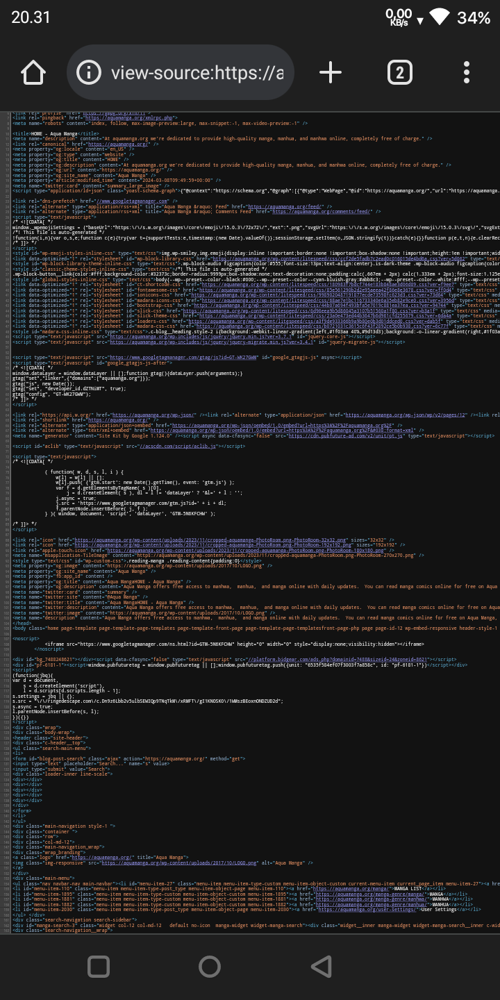
3. Klik titik tiga pojok kanan atas lalu pilih Cari dihalaman
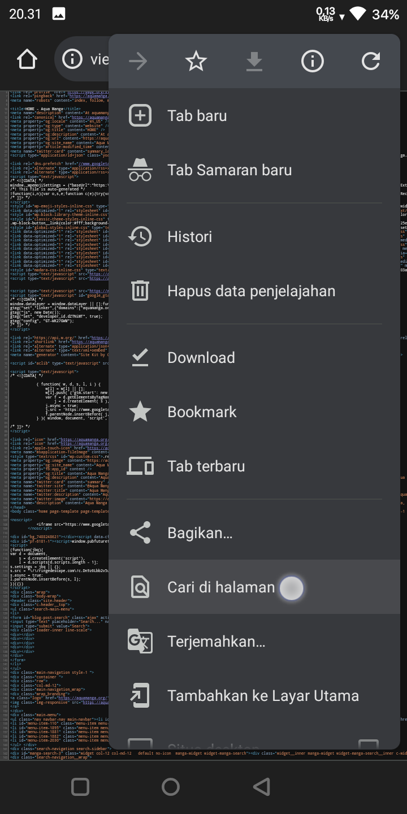
4. Cari kata 192x192.png maka gambar icon akan ketemu, langsung klik aja tulisan 192x192 nya maka gambar akan terbuka
OPTIONAL: Ukuran gambarnya adalah 192x192, jika mau lebih besar ada juga yg ukuran 270x270 tapi gak bisa di klik, solusinya adalah klik dan tahan link 192x192 lalu klik Salin URL, lalu tempelkan di bar dan ubah 192x192 menjadi 270x270 lalu kunjungi dan simpan gambar
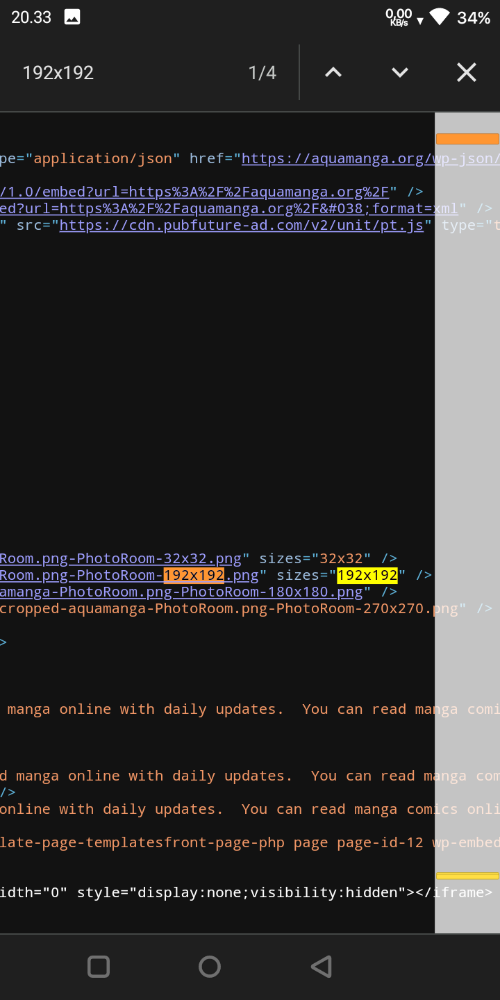
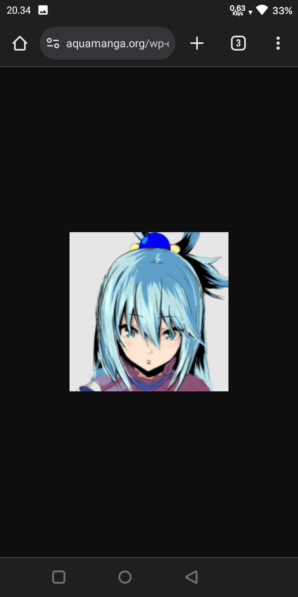
5. Kunjungi Icon Generator, jika sudah terbuka, silahkan klik bagian image dan pilih gambar yang sudah didapat tadi untuk dijadikan icon
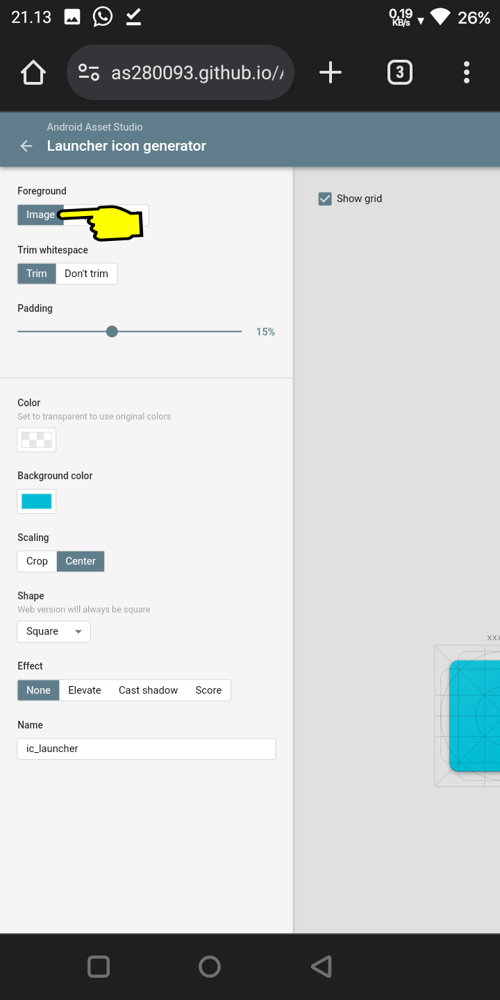
Akan tampak seperti dibawah jika gambar sudah di upload, silahkan atur padding sesuka kalian dan background sesuka kalian
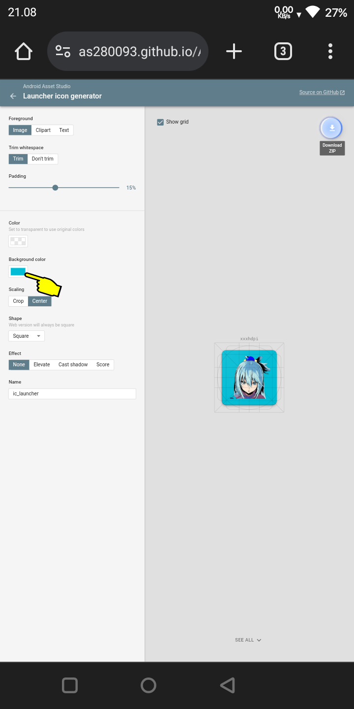
Jika semuanya sudah, silahkan donlod filenya yang berupa ZIP di pojok kanan atas
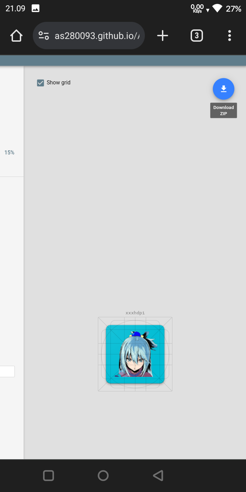
6. Download file resources.arsc ini untuk mengganti yang ori, udah ane edit agar menyesuaikan nama folder karna yang ori gak bakal cocok dengan nama folder2 gambar yang kita bikin dari web tadi
Untuk mempermudah eksekusi, tambahkan saja file resources.arsc yang di donlod ke dalam file ZIP icon
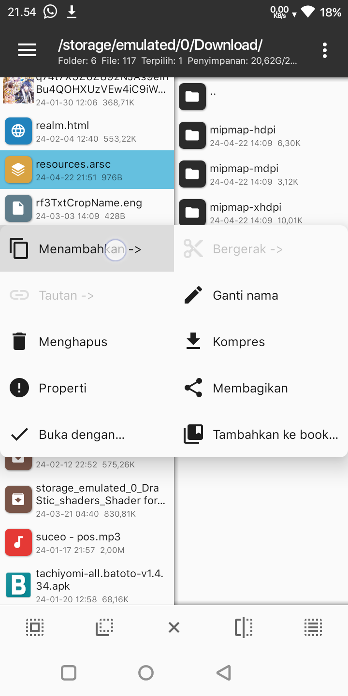
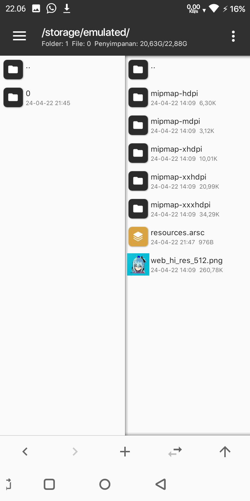
Buka ekstensi yang ingin di ganti iconnya lalu buka folder res, hapus semua isi dari foldernya, biarkan foldernya tetap kosong
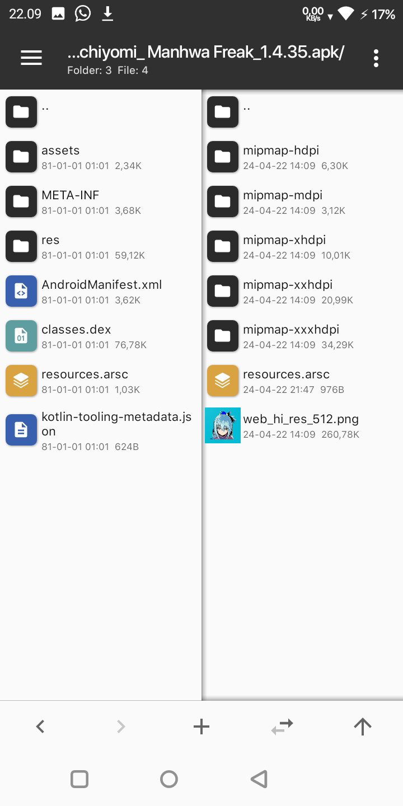
lalu masukkan 5 folder iconnya ke dalam folder res yang ada di ekstensi
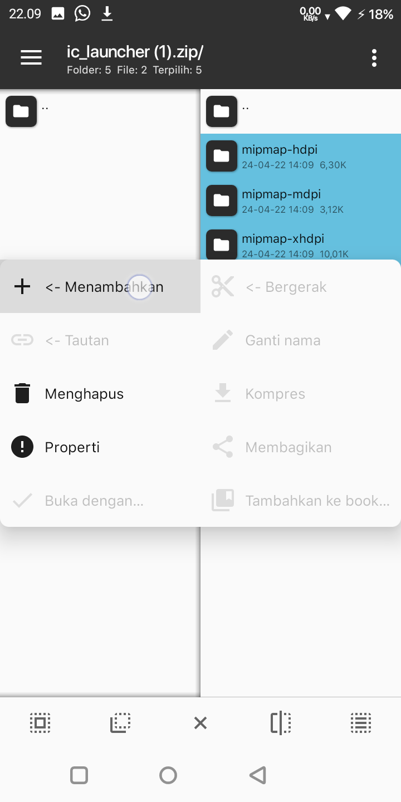
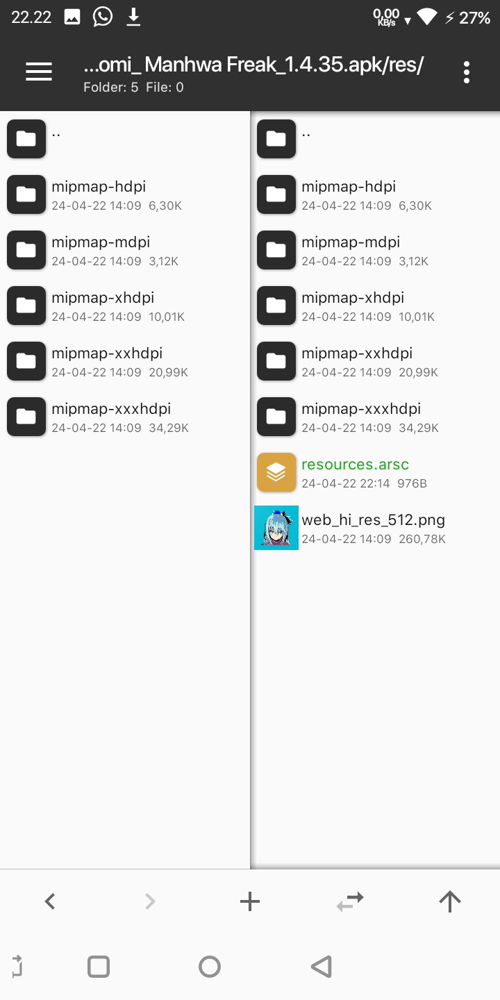
Dan yang terakhir, ganti file resource.arsc nya
Selesai
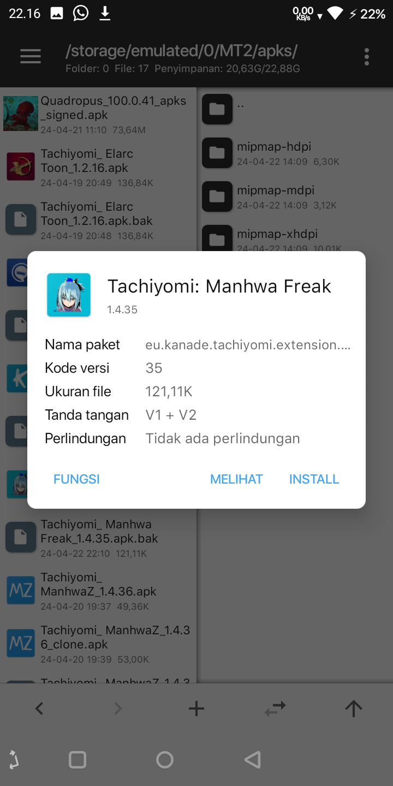
Hasilnya
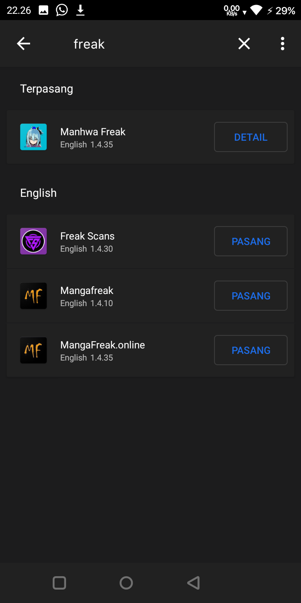
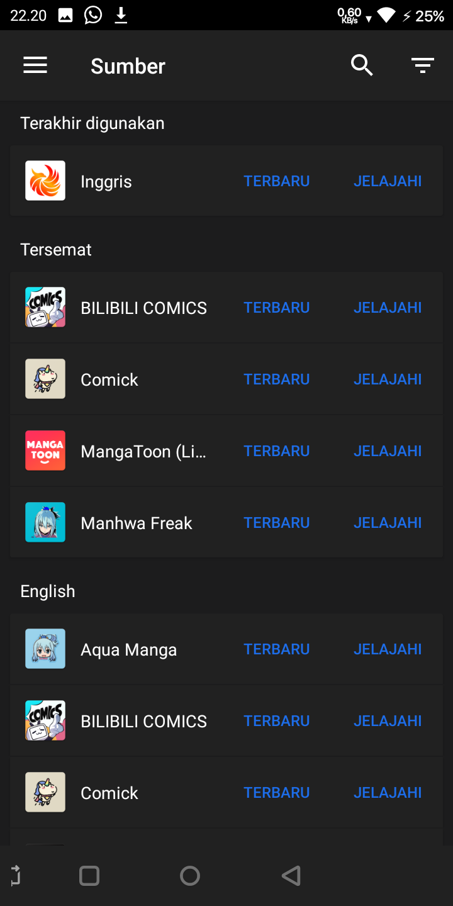


PERINGATAN!!!!!
Jangan mencari untung dengan memendekkan URL biar cuan, apa lagi menjual dengan meminta pulsa atau semacamnya, silahkan minta Donasi saja, pihak Tachiyomi ngasih kita ni app free tanpa biaya, tanpa iklan, kalau dari sana free, kita juga harus free, mohon pengertiannya
TERIMA KASIH